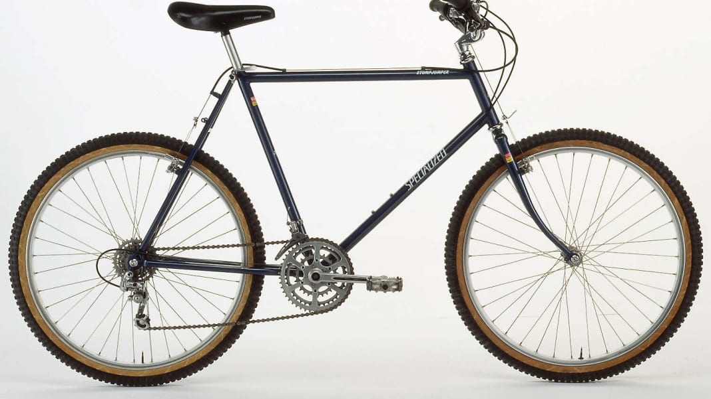
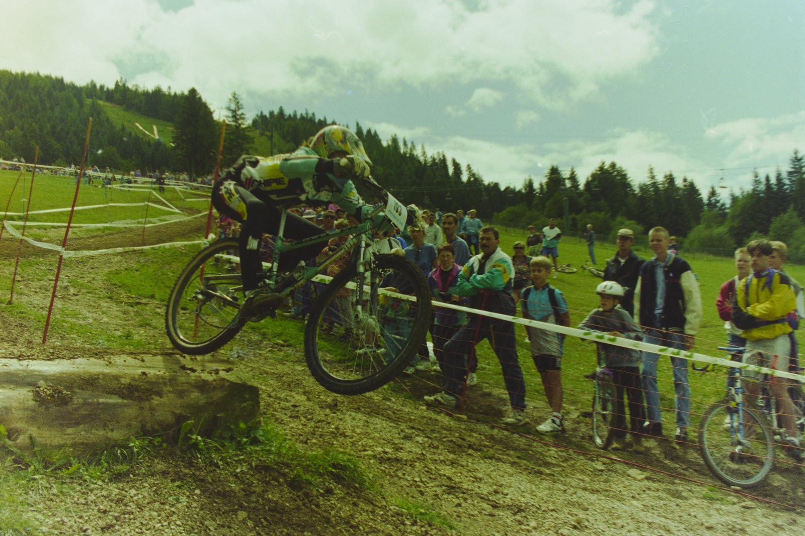

The first ones
Breezer N°1

The first real mountain bike is created! His name: “Breezer N°1”, in reference to Joe Breeze, mentioned before. It is designed to withstand repeated shocks. It also integrates components found on mountain bikes that will be developed later: 26-inch steel rims from the Araya brand, Phil Wood hubs, Sun Tour derailleurs, Dia-Compe brakes... Two years later, in 1979, Tom Ritchey, created the Fisher MountainBikes brand with Gary Fisher and Charlie Kelly. Mass production of mountain bikes is launched!
Specialized Stumpjumper
If mountain biking attracted a few enthusiasts who wanted to try this new discipline, there were still only a handful until the early 1980s. At that time, the first models appeared in bike shows and mountain biking began to take off. make a name for yourself. In 1981, the Specialized Stumpjumper was released. It is a turning point in the history of the discipline since the model is a real reference and remains today one of the most famous models of the Specialized brand.
Groceries
In France

In 1984, the first mountain bike arrived in France. That same year, the first race in the discipline was organized. And it is once again to France that we owe it since it is the Roc d’Azur. Seven riders then come together to take part in this brand new race which today has 20,000. Other competitions are then organized (Paris-Deauville, the 24 Hours of Auvergne, Chalmazel-Montbrison) and little by little bring together more and more participants. In 1988, the discipline was recognized by the French cycling federation.
In the USA
Two years later, in 1990, the Mountain Bike World Championships were organized in the United States. In 1991, the first edition of the UCI World Cup was organized before the discipline made its appearance at the Atlanta Olympic Games in 1996. We then only spoke of “cross-country”, the original discipline of mountain biking, before Others are making their appearance like downhill, enduro, slopestyle and so on...
Today
Today, competitions are constantly pushing the limits of drivers. We think of Red Bull Hardline, often considered the most difficult DH race, or Red Bull Rampage which brings together the craziest drivers every year in southern Utah in the USA.
In France, mountain biking (whether DH or cross-country) produces champions with unrivaled records and promotes the discipline throughout the world. Never before has it been so popular and we obviously hope only one thing: that it will continue.
Elegant stunts in a downhill ballet, mountain biking becomes poetry in movement. On steep trails, each descent is a refined choreography, a fusion of audacity and grace, where the mountain is the canvas and the mountain biker, the artist who dances with the slope, transcending the limits of earth and courage .